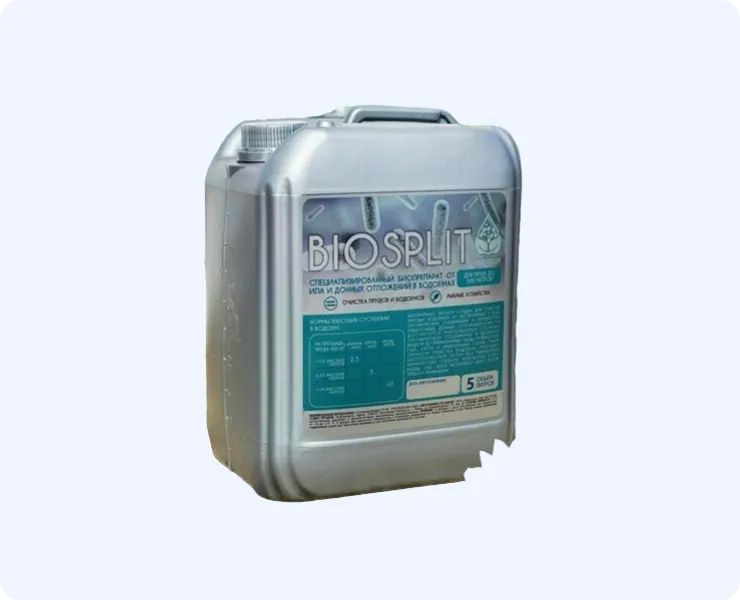

Биопрепараты
Средство от ила и водорослей, 5л, для пруда до 100000л
Цена и наличие
- 1 шт.100,01 BYN / шт.В наличии
Данные на 23.11.2026.
Характеристики
- Размер емкости
- 5 л
- Для прудов макс. объемом воды
- до 100000 л
- Назначение
- Против водорослей и ила
- Рекомендация к использованию
- Препарат BIOSPLIT с биопрепаратом CHLORELLER для наиболее лучшего результата
- Другое название биопрепарата
- BIOSPLIT
Описание
Простой и безопасный способ сделать водоем чистым, а воду — прозрачной Биопрепарат BIOSPLIT создан для очистки пресных водоемов от растворенных в воде органических соединений и переработки избыточных донных отложений.
СРЕДСТВО ДЛЯ ПРУДА ОТ ИЛА И ВОДОРОСЛЕЙ, 5Л (ДЛЯ ПРУДА ДО 1000М2) Простой и безопасный способ сделать водоем чистым, а воду — прозрачной Биопрепарат BIOSPLIT создан для очистки пресных водоемов от растворенных в воде органических соединений и переработки избыточных донных отложений. Очистка достигается разложением сложных органических соединений и ядовитых веществ до элементарных — воды, углекислого газа, азота и минеральных солей. Таким образом очистка водоема проходит биологическим путем без применения химических средств. Результаты будут видны уже через несколько дней после первого применения. При регулярном использовании средства вы получите отличный результат. — Очистка воды от вредных соединений — Ускоренная переработка донных отложений — Вытеснение сине-зеленых водорослей и предотвращение заболачивания — Устранение неприятного запаха от водоема — Вытеснение патогенной и гнилостной микрофлоры, а также уменьшение паразитарной нагрузки на водных обитателей — Снижение санитарного отхода рыбы по причине болезней разной этиологии — Усиление кормовой базы за счет развития зоо- и фитопланктона — Повышение продуктивности водоемов на 25-50% — Устранение неприятного запаха от мяса рыбы — Восстановление биоценоза Для максимального эффекта, рекомендовано совместное использование биобактерий BIOSPLIT с биопрепаратом CHLORELLER. В летний период обязательно. За две недели до внесения хлореллы для пруда CHLORELLER вноситься препарат BIOSPLIT. Перед применением необходимо проконсультироваться со специалистом.